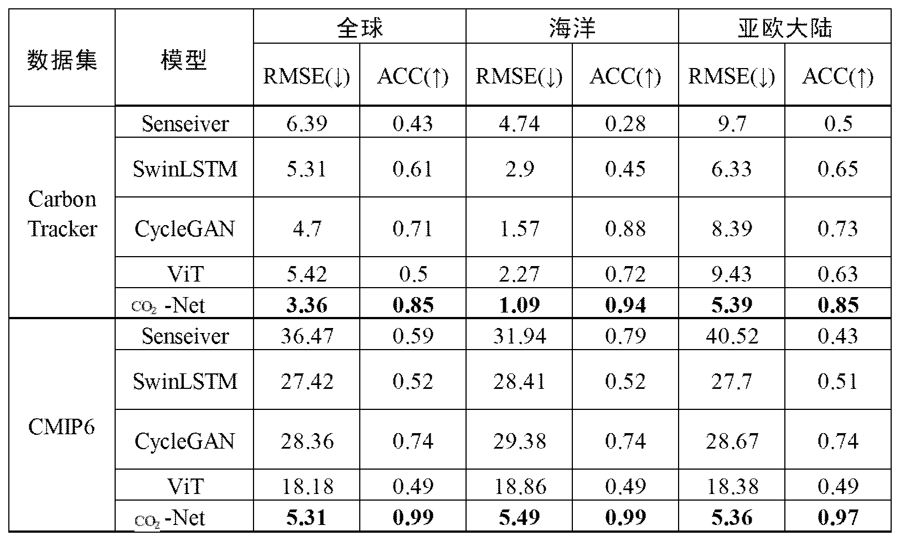
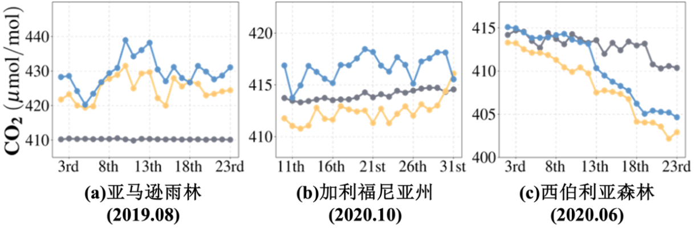

CO₂浓度重建 - 可视化交互区
操作流程：上传数据集文件 → 选择可视化类型 → 查看重建结果
支持对全球/局部CO₂浓度数据进行可视化展示，可切换年份/区域、缩放查看细节
支持对全球/局部CO₂浓度数据进行可视化展示，可切换年份/区域、缩放查看细节
支持格式：CSV / Excel | 示例数据集：CarbonTracker/CMIP6
请上传数据集并选择可视化类型查看结果
全球重建效果对比表

2000-2020长期趋势折线图

亚马逊野火短期变化曲线图
